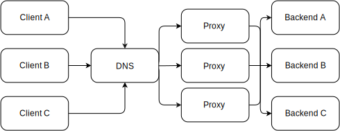

Minecraft, Instantly.
InstantMC is a Minecraft server platform crafted for large-scale networks
Simple
InstantMC is the simplest way to deploy Minecraft servers. Use Configuration as Code (CaC) to define server jars, plugins, mods, compiler flags, whitelists, and resource allocations. Then deploy your templates in one click.
Redundant
InstantMC is engineered for uninterrupted experiences. Automated failover ensures server availability, while automated backups and redundant data storage prevent data loss.
Portable
Powered by Kubernetes, InstantMC runs anywhere. Whether on the edge or in the cloud, InstantMC delivers scalabe, secure, deployments.
Enterprise Grade Server Management
With highly available redundant data storage plus auto-scaling load-balanced proxies, your servers are not only ready in an instant but also incredibly secure
Data Security
Multi-Site data replication is key to ensuring data is secure and available 24/7. InstantMC distributes server data across multiple nodes, ensuring the safety and integrity of your user's creations and progress.
Scalability
InstantMC scales horizontally by seamlessly connecting servers with proxies, load-balanced using round-robin DNS. The result is improved performance, reliability, and the ability to expand your network as your requirements evolve.
